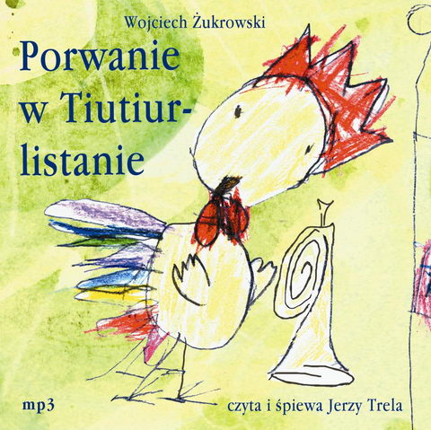

Książka mp3 czyta i śpiewa Jerzy Trela
W 1976 roku powieść W. Żukrowskiego została wpisana na Listę Honorową IBBY i wyróżniona Nagrodą im. Ch. Andersena przyznawaną najlepszym książkom dla dzieci. Porwanie Wiolinki, córki Cynamona, grozi zbrojnym konfliktem. Wojna między Tiutiurlistanem a Blablacją wisi na włosku. By jej zapobiec, trójka przyjaciół -Kogut kapral Marcin Pypeć, Kot Mysibrat Miauczura i Lisica Chytraska-postanawia odszukać Wiolinkę.
